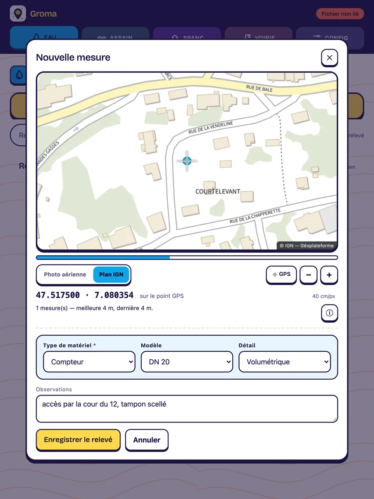
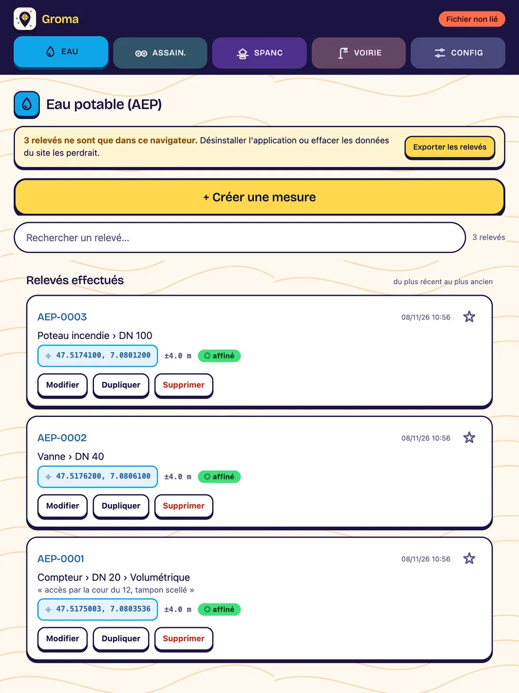

Groma
Le relevé GPS de terrain, prêt pour QGIS
Groma relève la position GPS d’un équipement sur le terrain, l’identifie dans votre catalogue et l’enregistre dans un fichier GeoJSON qui s’ouvre directement dans QGIS. Pensée pour la tablette utilisée dehors, parfois avec des gants.
- Hors réseau
- Sans compte
- Tablette et smartphone
- Libre (AGPL v3)
- Version 1.3
Un relevé, de bout en bout
- Créez une mesure. Dans l’onglet de la filière, par exemple Eau. La carte s’affiche et le GPS démarre tout seul ; un viseur reste fixe au centre.
- Laissez la mesure s’affiner. Le viseur se pose dès le premier point, puis se resserre ; précision et dispersion s’affichent en direct.
- Recalez si besoin. Le GPS est tombé à trois mètres du tampon ? Faites glisser la carte sous le viseur. L’écart est mesuré et enregistré à part : la précision du récepteur n’est jamais maquillée.
- Identifiez l’ouvrage. Trois listes liées : type, puis modèle, puis détail. Choisir un type restreint les modèles, choisir un modèle restreint les détails.
- Ajoutez une phrase. « Accès par la cour du 12, tampon scellé » : ce qu’aucun catalogue ne peut prévoir.
- Enregistrez. Le relevé rejoint le fichier de la filière, avec sa référence, sa date, sa précision et ses coordonnées en Lambert 93.

Ce que vous rapportez du terrain
Chaque relevé devient une entité d’un fichier GeoJSON conforme à la norme (RFC 7946), une filière par fichier. Vingt et un champs, dont quatre seulement sont saisis : les trois niveaux du catalogue et l’observation. Groma produit tout le reste — position, qualité de la mesure, conversion en Lambert 93, date, référence.
Le fichier se glisse dans QGIS et s’ouvre tel quel : la géométrie est dans le document, les nombres sont des nombres, aucun dialogue d’import ne demande quelle colonne porte le X.
Le tour suivant est plus rapide : une étoile sur un relevé met sa combinaison en favori, et un appui la repose. C’est ce qui rend tenable une tournée de vingt vannes identiques.
"type_materiel": "Compteur",
"modele": "DN 20",
"detail": "Volumétrique",
"observations": "accès par la cour du 12, tampon scellé",
"precision_m": 4,
"x_l93": 1006940.64,
"y_l93": 6720946.95
Quatre filières, un catalogue modifiable
| Filière | Fichier | Références |
|---|---|---|
| Eau | eau.geojson | AEP-0001… |
| Assainissement | assainissement.geojson | AC-0001… |
| SPANC | spanc.geojson | ANC-0001… |
| Voirie | voirie.geojson | VOI-0001… |
Ces filières sont la configuration livrée, pas une limite : le catalogue de matériel s’édite depuis l’application, sans toucher au code. Si vous relevez des bornes incendie ou des stations de mesure, vous remplacez le catalogue et les listes suivent.
L’installer sur la tablette
| Appareil | Comment faire |
|---|---|
| Android, Chrome | Bandeau Installer, ou menu ⋮, puis Installer l’application. |
| iPhone, iPad, Safari | Bouton Partager, puis Sur l’écran d’accueil. |
| Ordinateur | Icône d’installation dans la barre d’adresse. |
Une fois installée, Groma s’ouvre en plein écran et fonctionne sans réseau : GPS, saisie, catalogue et export restent entiers. Seul le fond de carte manque hors couverture ; le viseur, les coordonnées et l’enregistrement continuent de fonctionner.
Vos relevés restent chez vous
Aucun compte, aucun serveur : vos relevés vivent dans le navigateur de l’appareil et en sortent par un fichier que vous contrôlez. La seule requête vers l’extérieur est le chargement du fond de carte, fourni par la Géoplateforme de l’IGN.
Exportez vos relevés. Tant qu’ils ne sont que dans le navigateur, désinstaller l’application ou effacer les données du site les supprime. Groma vous prévient par un bandeau tant qu’un relevé n’est sorti nulle part. Sur Chrome et Edge, un fichier lié est réécrit à chaque enregistrement : c’est la façon la plus sûre de ne rien perdre.
En bref
- Version
- 1.3
- Plateformes
- Navigateur web sur tablette, smartphone et ordinateur ; installable comme application. Utilisable dès 280 px de large
- Fonctionnement
- Hors réseau, sans compte, sans serveur
- Fichiers
- GeoJSON (RFC 7946), coordonnées WGS84 et Lambert 93
- Fond de carte
- Photo aérienne et plan de l’IGN (Géoplateforme)
- Licence
- Libre (AGPL v3) — code source sur GitHub
Vous relevez autre chose ?
Bornes, capteurs, arbres remarquables : décrivez-nous votre tournée, nous vous dirons comment adapter le catalogue.